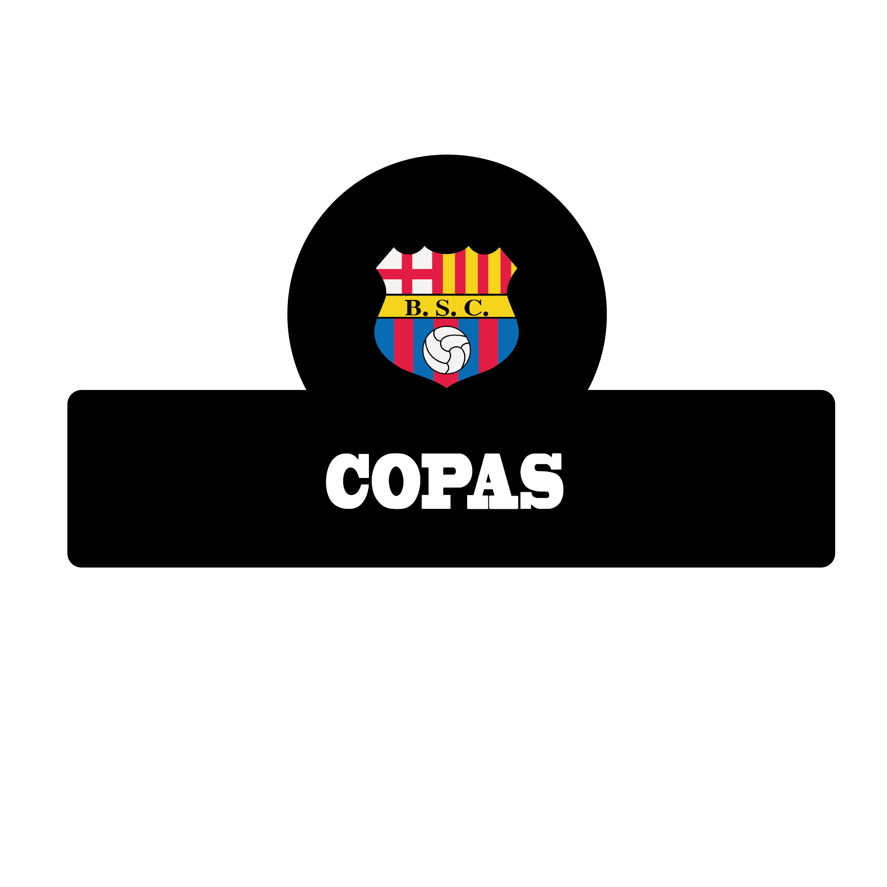
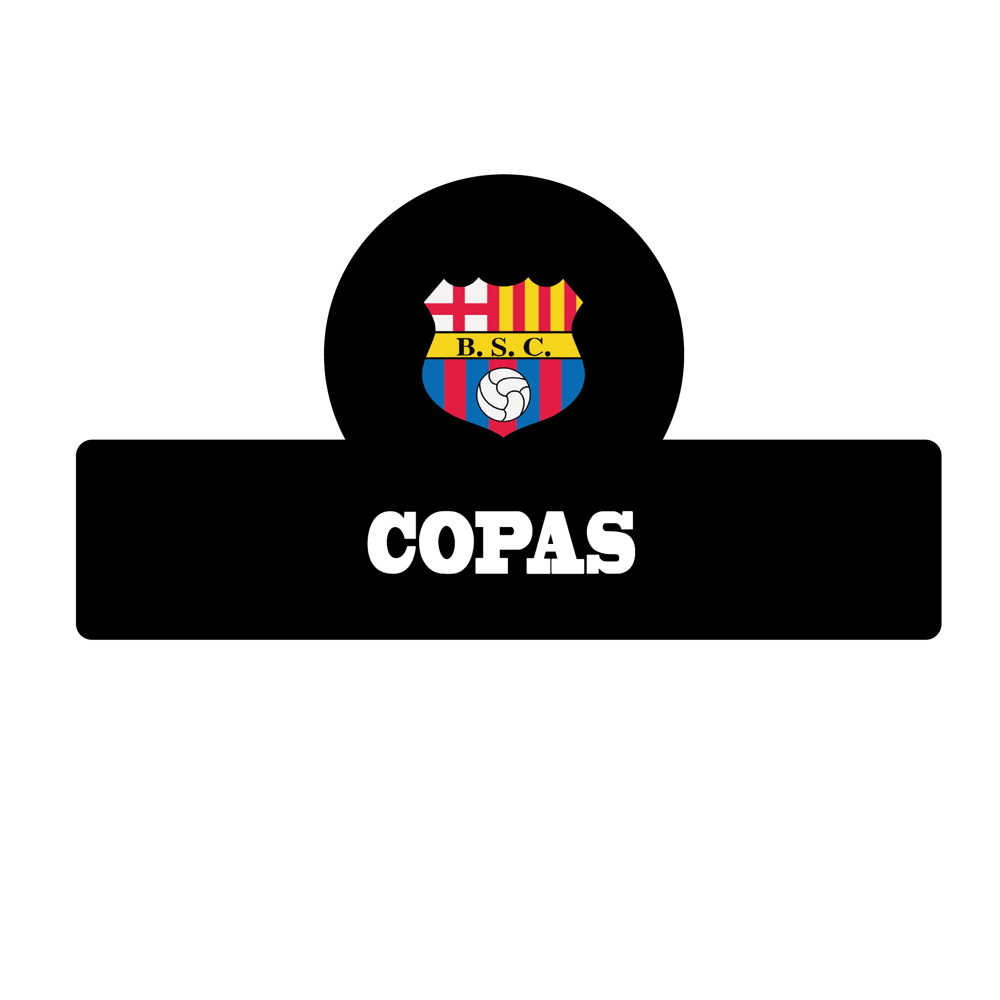

|
|
|
Fue fundado el 1 de mayo de 1925 en la ciudad de Guayaquil por un grupo de jóvenes del Barrio del Astillero, conocidos como La Gallada de la Modelo, que se reunieron en la casa del catalán Eutimio Pérez para formar un club deportivo multidisciplinario y a su vez decidir su directorio. De esta manera, el ecuatoriano Carlos García Ríos se convertiría en el primer presidente de la institución y el catalán (español) Onofre Castells Drago en el primer presidente honorario.8? Entre los miembros fundadores están los españoles: Eutimio Pérez, Valentín Sala, Arturo y Juan Domenech, March y Castells Peré, y los ecuatorianos Carlos García, Arturo Calderón, Luis Rodríguez, Carlos García Vergara, Víctor Olvera, Rigoberto Aguirre, Alberto Pombar, José Salém, Guillermo de la Cuadra y, el más joven de la directiva, Victoriano Artega, con solo 14 años de edad.15? El nombre de la institución hace referencia a la ciudad de Barcelona, y le fue puesto este nombre en agradecimiento al apoyo brindado por la comunidad catalana a la ciudad de Guayaquil, además de que varios de los socios fundadores eran originarios de aquella ciudad. Estos españoles admiraban al arquero Ricardo Zamora del Fútbol Club Barcelona.16? El nombre fue puesto a votación, en donde Barcelona Sporting Club propuesto por los catalanes -quienes conformaban mayoría en la asamblea- se impuso frente a la propuesta de los guayaquileños de denominar al club como Deportivo Astillero.17? La primera indumentaria que usó el club fue clásica de la época con la camiseta de color negro con cuello y pantaloneta blanca. Sin embargo, tiempo después se contó que en la Federación Deportiva del Guayas ya existía un equipo con similar uniforme llamado Camisas Negras, por lo cual en 1927 se cambiarían los colores a un predominante amarillo acompañado de rojo, por diseño del español Alberto March, haciendo referencia a los colores de la señera catalana.18? El equipo, en el mismo año de su fundación, consiguió el vicecampeonato de la Serie B del Torneo Federación Deportiva del Guayas, por lo que en 1926 debutó en la serie de honor del campeonato federativo.8 |
|
La bandera de Barcelona Sporting Club es de color amarillo, la cual posee cuatro franjas horizontales de color rojo, dos en la parte superior y dos en la parte inferior. El escudo de la institución se encuentra en el centro de la bandera. |
ESCUDO |
El escudo de Barcelona Sporting Club proviene del que usaba el Fútbol Club Barcelona de España en los años 1899 hasta 1910 aunque sin los tenantes o soportantes a los lados. Su forma de escudo español cinturado (estilo piel de toro) proviene de una particular forma estética de los escudos de armas de la península ibérica, divididos en tres cuarteles. Los dos cuarteles superiores reproducen la bandera de Barcelona, formada por la Cruz de San Jorge y la señera. En el cuartel inferior aparece un balón sobre varias franjas de color azul y grana. Entre los cuarteles superiores y el inferior se reproduce las siglas del nombre del club BSC. El primer escudo del Barcelona fue en un principio formado por un blasón de tipo español que reproducía no en la forma pero si en los elementos la Cruz de San Jorge y la señera, característicos de la ciudad de Barcelona, pero posteriormente se decidió adoptar uno de gran semejanza al del equipo español, el cual con pocos cambios se mantiene actualmente.[cita requerida] Anteriormente, en las camisetas y en varios logos de la institución, al escudo le solía acompañar un arco inferior de estrellas, una por cada uno de los campeonatos nacionales ganados por el club. Las diferencias del escudo del equipo ecuatoriano con el del Fútbol Club Barcelona son minúsculas, ya que ambos escudos tienen la misma forma y la distribución de los símbolos se encuentran localizados en las mismas posiciones, otro punto importante es que los colores que utilizan ambos escudos son realmente similares, al igual que el nombre de ambos clubes. |
|
A principios de su vida institucional el club vestía camiseta negra, en la cual se lucía el primer escudo de la institución, pantaloneta blanca y medias negras. A partir de 1927, el equipo cambió los colores principales de su uniforme y comenzó a utilizar una camiseta de color amarillo con rayas verticales de color rojo, la cual fue diseñada por el Catalán Alberto March y eligió esos colores en honor a la señera catalana, desde entonces estos han sido los colores representativos del Barcelona por décadas. Otro de los hechos característicos del uniforme son las publicidades que a través de los años se han ido incrementando, aunque en el espacio central de la camiseta solo han estado publicidades de empresas de mucha importancia en el país. Actualmente su principal auspiciante es Pilsener. |